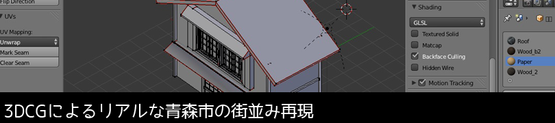
画像はクリックすると拡大表示します。
- 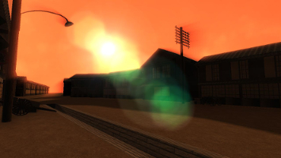
- 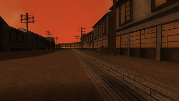
- 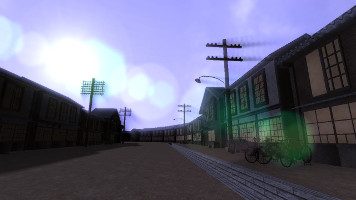
- 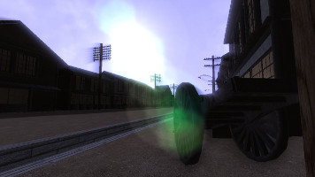
- 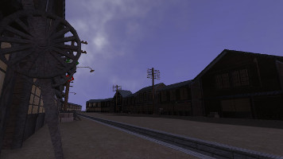
- 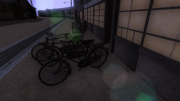
- 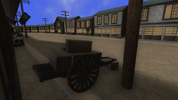
- 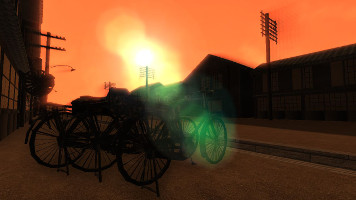
- 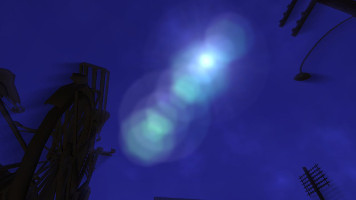
- 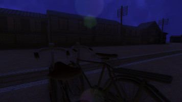
- 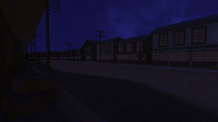
青森大学のソフトウェア情報学部が
社会学部と連携して太宰治が旧・青森中学校を通っていた
時代(昭和初期)の青森市の街並みをリアルに3Dで再現する
というプロジェクトです。
作業は資料調査からはじまりました。 当時の写真や絵葉書、地図、映像資料などを集めました。
当たり前ですが、資料となる写真は白黒ばかりで 色はわからない。絵葉書に塗られている色は制作者の 想像に過ぎないため、正確な情報ではありません。 色だけではなく、建物の形も同じような問題に直面しました。
ですが、なんとかビューワーとして形にすることができました。 太宰が見ていた昭和初期の青森市の街並みをご覧ください。
作業は資料調査からはじまりました。 当時の写真や絵葉書、地図、映像資料などを集めました。
当たり前ですが、資料となる写真は白黒ばかりで 色はわからない。絵葉書に塗られている色は制作者の 想像に過ぎないため、正確な情報ではありません。 色だけではなく、建物の形も同じような問題に直面しました。
ですが、なんとかビューワーとして形にすることができました。 太宰が見ていた昭和初期の青森市の街並みをご覧ください。
開発者達のこだわりが多く垣間見るものとなりました。
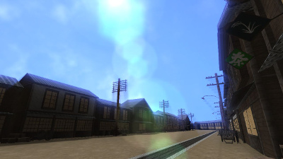
{kind=link}
建物の3Dモデルは建物の規格や各パーツの大きさをきめ細かく
調べ、各モデルに反映されています。光源、それに伴う影、雲・・・
それ以外にも様々な技術が使われ、よりリアルさを演出してくれます。
レンズフレアはそのわかりやすい特徴のひとつでしょう。
{kind=link}
{kind=link}
{kind=link}
{kind=link}
また、物の質感や汚れをテクスチャで表現したり、店の看板や、自転車などの道端
においてある、より当時の生活感をだすためのアイテムを「ノイズ」
と定義し、それを配置しております。
ノイズを設置したり、汚れを表現することによりCGによくある独特な”綺麗すぎる違和感”
を回避できることができます。
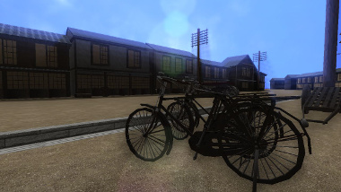
{kind=link}
{kind=link}
キューブマップを利用した街並み再現が擬似的に体験できます。
これは開発したビューワーでスクリーンショットを撮り、
その画像を利用して制作しました。
是非体験してください。
注意！
このキューブマップはインターネットエクスプローラー(IE)、Safari ではみることができません！
Firefox(ダウンロードはこちら)、 Google Chrome(ダウンロードはこちら)をご利用ください。
こちらからどうぞ!↓
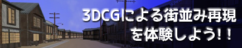
注意！
このキューブマップはインターネットエクスプローラー(IE)、Safari ではみることができません！
Firefox(ダウンロードはこちら)、 Google Chrome(ダウンロードはこちら)をご利用ください。
こちらからどうぞ!↓
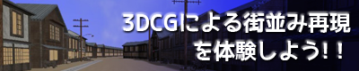
開発者について
齋藤雄輝(青森大学/ソフトウェア情報学部)
担当：建物の3Dモデル、小物の3Dモデル、テクスチャの制作
開発環境：Blender2.72、Gimp2、Adobe Photoshop Elements 6.0、VisualStadio 2013
人がいるような雰囲気を出す物を作成しました。また物の劣化などを研究しました。
担当：建物の3Dモデル、小物の3Dモデル、テクスチャの制作
開発環境：Blender2.72、Gimp2、Adobe Photoshop Elements 6.0、VisualStadio 2013
人がいるような雰囲気を出す物を作成しました。また物の劣化などを研究しました。